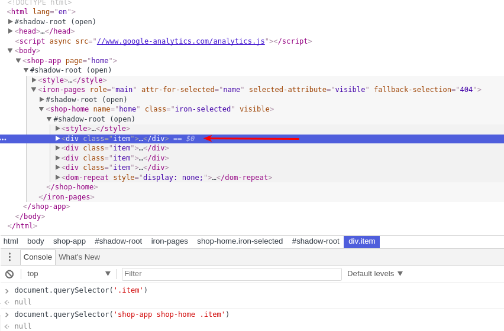
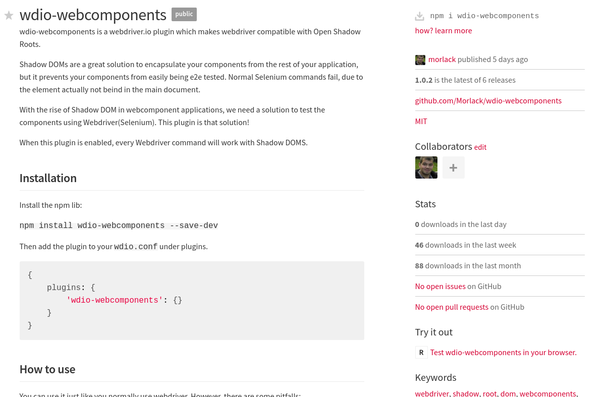
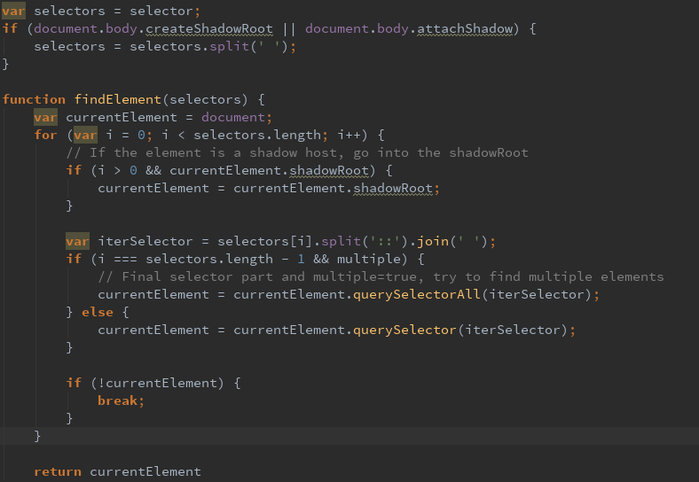
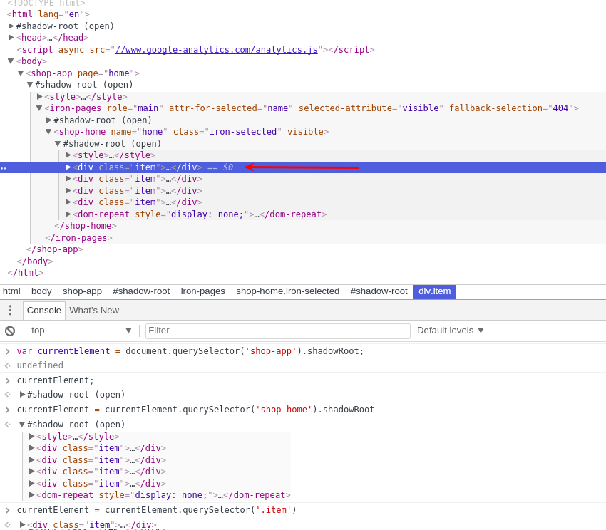
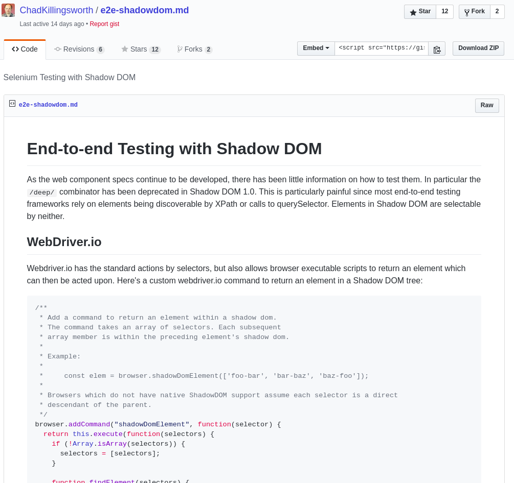

# E2E testing
> End-to-end testing is a methodology used to test whether the flow of an application is performing as
designed from start to finish.
Note:
So we all have some basic understanding of the subject before going further, I would like to talk about E2E testing.
End-to-End testing is a method to test whether the flow of an application is performing as designed from start to finish.
We use it to verify the behavior of an application in the wild. Generally, this 'wild' is an environment whether the application, it's infrastructure and dependencies
are as much like the production environment as possible.
We do this to prevent errors that occur when all parts come together and don't fit correctly...
# Tooling
Selenium dominates open-source market for web E2E-testing
Wrappers such as _webdriver.io_ are high-level libraries that use Selenium
Tooling for E2E-testing non-browser applications are available
Note:
So what do we use to E2E-test web applications? Often it is Selenium. There are lots of libraries built on top if it to
add functionality to use it more easily, such as WebDriver.io in the Javascript world.
Webdriver.io Code
it('can get text of an element', async function() {
const selector = 'shop-app shop-detail .description h2';
const expected = 'Description';
const url = '/detail/ladies_outerwear/LadiesFull+Zip'
await browser.url(url);
await browser.waitForText(selector);
assert.equal(await browser.getText(selector), expected);
});
# Confusion
Acceptance Testing is often confused with End-to-End Testing
Acceptance Testing (or User Acceptance Testing) is a **phase** in the testing process
E2E-Testing is a **means** to verify application behavior during Acceptance Test phase
Note:
So, let me clear something up. E2E-testing is not the same as Acceptance testing.
I've been guilty of confusing these two myself and have found it occurring everywhere.
E2E-testing is a method to test your Software. Acceptance Testing is a phase in your development lifecycle.
E2E-testing is often used in this phase, which is where the confusion comes from. Now you know this, you
will never say it wronly again! :)
# Conclusion
E2E-testing is a means to verify application behavior
E2E test tools often use Selenium
Tools find elements in the page by using CSS selectors
# Shadow DOM
> Shadow DOM removes the brittleness of building web apps. [...] Shadow DOM fixes CSS and DOM. It introduces
scoped styles to the web platform.
# Shadow DOM
Separates the DOM of a Custom Element from the main document or other elements
Because of the separation, styles do not leak
# Interaction
Encapsulation makes sure interaction with your element is done in two ways:
- Light DOM
- Style mixins and variables
Note:
We won't go deep into Javascript
Light DOM
With light DOM you can add customization where the author intended it
Hello
This is a news article
Style
With style mixins and variables you can extend or modify the element's style
# Conclusion
Shadow DOMs are DOM trees which are fully encapsulated
CSS selectors have no effect on these DOMs
There are two ways to interact with Shadow DOM:
- Light DOM
- Style mixins and variables
# The problem
> [..] most end-to-end testing frameworks rely on [..] calls to querySelector. Elements in Shadow DOM are selectable by neither.
---
Selenium uses querySelector to find an element; Shadow DOMs prevent this
```
document.querySelector('my-shop my-detail-page');
```
Above will not work, what is needed is:
```
document.querySelector('my-shop').shadowRoot
.querySelector('my-detail-page');
```
---
# Broken e2e tests
The upgrade to Polymer 2 broke our E2E-tests completely

# The solution
Webdriver io plugin which:
- Overrides element and elements commands
- Uses a javascript function in the browser
- Use this for further operations
Webdriver.io (almost) completely like you're used to!
---
# Wdio-webcomponents
> wdio-webcomponents is a webdriver.io plugin which makes webdriver compatible with open Shadow Roots.



Inspiration
This library was inspired by ChadKillingsworth's solution
You can find a link to his post on Github or NPM

# Conclusion
Shadow DOMs break Selenium
wdio-webcomponents is a Webdriver.io plugin that solves this
Demo Time!
# Link
wdio webcomponents can be found on NPM and Github:
https://www.npmjs.com/package/wdio-webcomponents
https://github.com/Morlack/wdio-webcomponents
# Questions?